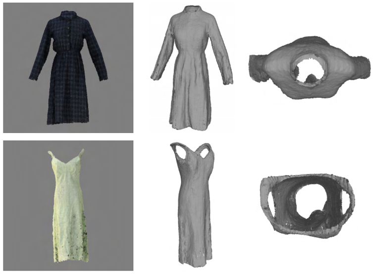
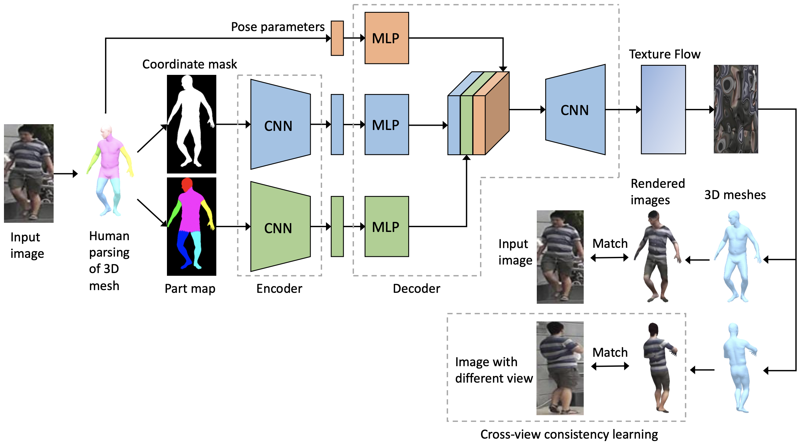
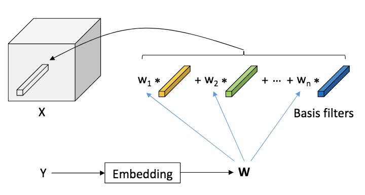
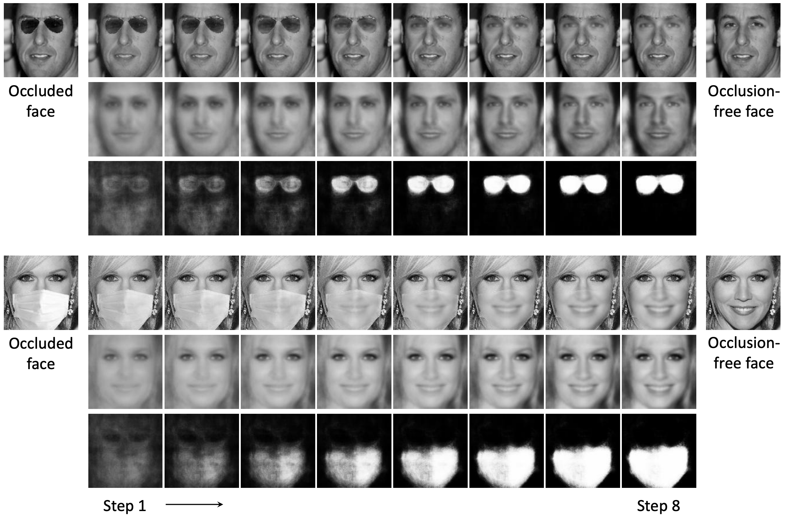
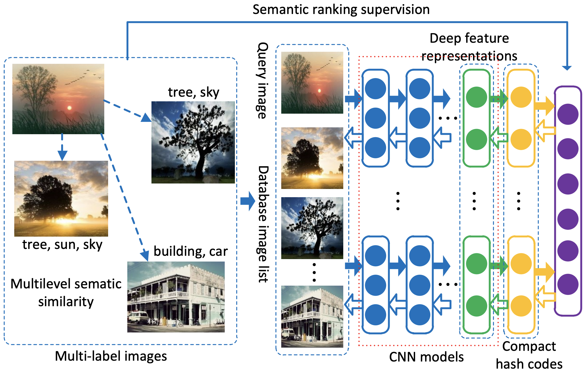

|
Fang Zhao
I am a Senior Researcher in Tencent AI Lab. My research is currently on 3D vision and deep learning.
Prior to Tencent, I was a research scientist in Inception Institute of Artificial Intelligence (IIAI) from 2018 to 2021,
where I worked with Shengcai Liao and
Ling Shao.
I was a research fellow in National University of Singapore (NUS) from 2015 to 2017, co-supervised by
Jiashi Feng and Shuicheng Yan.
I received my Ph.D. degree from Institute of Automation, Chinese Academy of Sciences (CASIA)
under the supervision of Liang Wang.
Email /
Google Scholar /
Github
|
|
|

|
Learning Anchored Unsigned Distance Functions with Gradient Direction Alignment for
Single-view Garment Reconstruction
Fang Zhao,
Wenhao Wang,
Shengcai Liao,
Ling Shao
ICCV, 2021 (Oral)
arXiv /
Code /
bibtex
We propose a novel learnable Anchored Unsigned Distance Function (AnchorUDF)
representation for 3D garment reconstruction from a single image.
|
|

|
Human Parsing Based Texture Transfer from Single Image to 3D Human via
Cross-View Consistency
Fang Zhao,
Shengcai Liao,
Kaihao Zhang,
Ling Shao
NeurIPS, 2020
Code /
bibtex
A human parsing based texture transfer model via cross-view consistency learning which generates
the texture of 3D human body from a single image.
|
|

|
Dynamic Conditional Networks for Few-Shot Learning
Fang Zhao*,
Jian Zhao*,
Shuicheng Yan,
Jiashi Feng (* - equal contribution)
ECCV, 2018
Code /
bibtex
A novel Dynamic Conditional Convolutional Network (DCCN) is proposed to handle conditional few-shot learning,
i.e, only a few training samples are available for each condition.
|
|

|
Robust LSTM-Autoencoders for Face De-Occlusion in the Wild
Fang Zhao,
Jiashi Feng,
Jian Zhao,
Wenhan Yang,
Shuicheng Yan
TIP, 2018
arXiv /
Code /
bibtex
We propose a robust LSTM-Autoencoders (RLA) model consisting of two LSTM components, which aims at
occlusion-robust face encoding and recurrent occlusion removal respectively.
|
|

|
Deep Semantic Ranking Based Hashing for Multi-Label Image Retrieval
Fang Zhao,
Yongzhen Huang,
Liang Wang,
Tieniu Tan
CVPR, 2015
arXiv /
Code /
bibtex
We propose a deep semantic ranking based method for learning hash functions that preserve
multilevel semantic similarity between multi-label images.
|
|